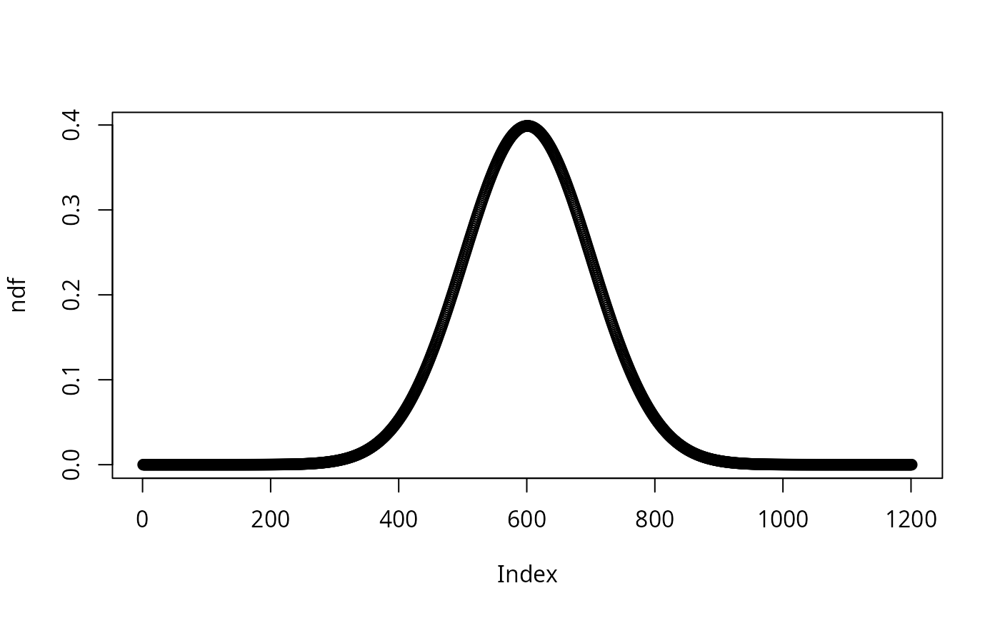
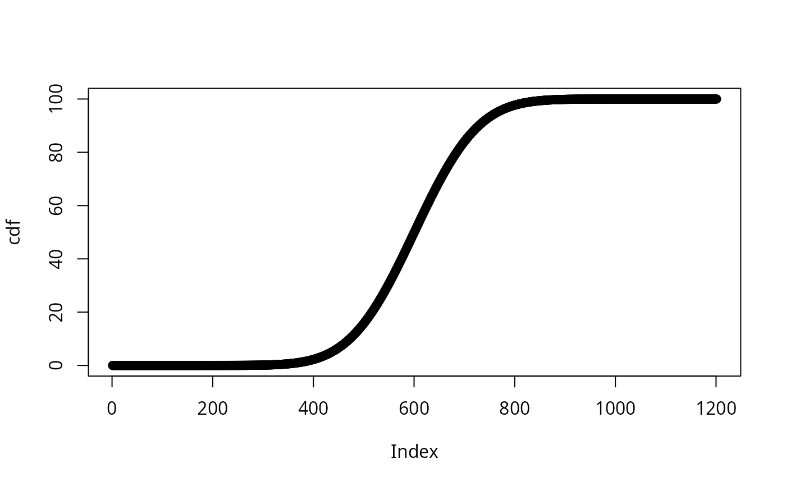

Transforms a numeric vector into one of several standard score formats, including z-scores, T-scores, stens, stanines, percentiles, and others. Can operate on raw scores or pre-standardised z-scores.
Arguments
- vector
Numeric vector of raw scores or z-scores (see
input).- mean
Numeric. Population mean used for
"uz"and density types. Default is0.- sd
Numeric. Population standard deviation used for
"uz"and density types. Default is1.- type
Character. The output score type. One of:
"z"Z-scores (mean=0, sd=1).
"uz"Unstandardise: convert z-scores back to raw scores using supplied
meanandsd."sten"Sten scores (1–10, mean=5.5, sd=2).
"t"T-scores (mean=50, sd=10).
"stanine"Stanine scores (1–9, mean=5, sd=2).
"center"Mean-centred scores.
"center_reversed"Reversed mean-centred scores.
"percent"Percentage of the maximum observed value.
"percentile"Cumulative normal percentile (0–100).
"scale_zero_one"Min-max scaled scores (0–1).
"normal_density"Normal density values.
"cumulative_density"Cumulative sum of the input vector.
"all"Returns a data frame with all score types, sorted by z-score.
- input
Character. Whether
vectorcontains raw scores ("non_standard") or already-standardised z-scores ("standard"). Default is"non_standard".
Examples
vector <- c(rnorm(10), NA, rnorm(10))
compute_standard(vector, type = "z")
#> [1] 1.2800617 1.2595127 -0.5093531 0.4555107 0.3294185 -1.2158177 0.9908949 -1.4385837 -0.8447783 1.1580067 NA -0.2150299 0.0744687 -1.1794970 -1.0269639 0.5805701 0.1117861
#> [18] -0.2601330 -0.9226393 -0.7114428 2.0840086
compute_standard(vector, mean = 0, sd = 1, type = "uz")
#> [1] 1.13496509 1.11193185 -0.87077763 0.21073159 0.06939565 -1.66264885 0.81083998 -1.91234580 -1.24675343 0.99815445 NA -0.54087274 -0.21637579 -1.62193729 -1.45096397 0.35090973
#> [17] -0.17454693 -0.59142847 -1.33402726 -1.09729850 2.03610361
compute_standard(vector, type = "sten")
#> [1] 8 8 4 6 6 3 7 3 4 8 NA 5 6 3 3 7 6 5 4 4 10
compute_standard(vector, type = "t")
#> [1] 62.80062 62.59513 44.90647 54.55511 53.29418 37.84182 59.90895 35.61416 41.55222 61.58007 NA 47.84970 50.74469 38.20503 39.73036 55.80570 51.11786 47.39867 40.77361 42.88557 70.84009
compute_standard(vector, type = "stanine")
#> [1] 8 8 4 6 6 3 7 2 3 7 NA 5 5 3 3 6 5 4 3 4 9
compute_standard(vector, type = "center")
#> [1] 1.43481233 1.41177908 -0.57093040 0.51057882 0.36924288 -1.36280162 1.11068722 -1.61249856 -0.94690619 1.29800168 NA -0.24102551 0.08347145 -1.32209006 -1.15111673 0.65075697
#> [17] 0.12530031 -0.29158123 -1.03418002 -0.79745126 2.33595085
compute_standard(vector, type = "center_reversed")
#> [1] -1.43481233 -1.41177908 0.57093040 -0.51057882 -0.36924288 1.36280162 -1.11068722 1.61249856 0.94690619 -1.29800168 NA 0.24102551 -0.08347145 1.32209006 1.15111673 -0.65075697
#> [17] -0.12530031 0.29158123 1.03418002 0.79745126 -2.33595085
compute_standard(vector, type = "percent")
#> [1] 55.742011 54.610769 -42.766863 10.349748 3.408257 -81.658362 39.823120 -93.921831 -61.232318 49.022773 NA -26.564107 -10.626954 -79.658878 -71.261794 17.234375 -8.572596
#> [18] -29.047071 -65.518633 -53.892076 100.000000
compute_standard(vector, type = "scale_zero_one")
#> [1] 0.77177407 0.76594058 0.26379170 0.53769902 0.50190372 0.06323924 0.68968486 0.00000000 0.16857057 0.73712487 NA 0.34734472 0.42952811 0.07355001 0.11685140 0.57320110 0.44012185
#> [18] 0.33454078 0.14646725 0.20642212 1.00000000
ndf <- compute_standard(seq(-6, 6, .01), mean = 0, sd = 1, type = "normal_density")
plot(ndf)

cdf <- compute_standard(ndf, mean = 0, sd = 1, type = "cumulative_density")
plot(cdf)

compute_standard(vector, type = "all")
#> score z sten t stanine percent percentile scale_0_1
#> 8 -1.91234580 -1.4385837 3 35.61416 2 -93.921831 7.513425 0.00000000
#> 6 -1.66264885 -1.2158177 3 37.84182 3 -81.658362 11.202719 0.06323924
#> 14 -1.62193729 -1.1794970 3 38.20503 3 -79.658878 11.910016 0.07355001
#> 15 -1.45096397 -1.0269639 3 39.73036 3 -71.261794 15.221873 0.11685140
#> 19 -1.33402726 -0.9226393 4 40.77361 3 -65.518633 17.809760 0.14646725
#> 9 -1.24675343 -0.8447783 4 41.55222 3 -61.232318 19.911731 0.16857057
#> 20 -1.09729850 -0.7114428 4 42.88557 4 -53.892076 23.840496 0.20642212
#> 3 -0.87077763 -0.5093531 4 44.90647 4 -42.766863 30.525236 0.26379170
#> 18 -0.59142847 -0.2601330 5 47.39867 4 -29.047071 39.738061 0.33454078
#> 12 -0.54087274 -0.2150299 5 47.84970 5 -26.564107 41.487201 0.34734472
#> 13 -0.21637579 0.0744687 6 50.74469 5 -10.626954 52.968128 0.42952811
#> 17 -0.17454693 0.1117861 6 51.11786 5 -8.572596 54.450351 0.44012185
#> 5 0.06939565 0.3294185 6 53.29418 6 3.408257 62.908029 0.50190372
#> 4 0.21073159 0.4555107 6 54.55511 6 10.349748 67.562907 0.53769902
#> 16 0.35090973 0.5805701 7 55.80570 6 17.234375 71.923487 0.57320110
#> 7 0.81083998 0.9908949 7 59.90895 7 39.823120 83.913154 0.68968486
#> 10 0.99815445 1.1580067 8 61.58007 7 49.022773 87.656934 0.73712487
#> 2 1.11193185 1.2595127 8 62.59513 8 54.610769 89.607740 0.76594058
#> 1 1.13496509 1.2800617 8 62.80062 8 55.742011 89.973828 0.77177407
#> 21 2.03610361 2.0840086 10 70.84009 9 100.000000 98.142031 1.00000000
#> 11 NA NA NA NA NA NA NA NA
compute_standard(seq(-6, 6, .1), type = "all", input = "standard")
#> score z sten t stanine percent percentile scale_0_1
#> 1 -6.0 -6.0 1 -10 1 -100.000000 9.865876e-08 0.000000000
#> 2 -5.9 -5.9 1 -9 1 -98.333333 1.817508e-07 0.008333333
#> 3 -5.8 -5.8 1 -8 1 -96.666667 3.315746e-07 0.016666667
#> 4 -5.7 -5.7 1 -7 1 -95.000000 5.990371e-07 0.025000000
#> 5 -5.6 -5.6 1 -6 1 -93.333333 1.071759e-06 0.033333333
#> 6 -5.5 -5.5 1 -5 1 -91.666667 1.898956e-06 0.041666667
#> 7 -5.4 -5.4 1 -4 1 -90.000000 3.332045e-06 0.050000000
#> 8 -5.3 -5.3 1 -3 1 -88.333333 5.790134e-06 0.058333333
#> 9 -5.2 -5.2 1 -2 1 -86.666667 9.964426e-06 0.066666667
#> 10 -5.1 -5.1 1 -1 1 -85.000000 1.698267e-05 0.075000000
#> 11 -5.0 -5.0 1 0 1 -83.333333 2.866516e-05 0.083333333
#> 12 -4.9 -4.9 1 1 1 -81.666667 4.791833e-05 0.091666667
#> 13 -4.8 -4.8 1 2 1 -80.000000 7.933282e-05 0.100000000
#> 14 -4.7 -4.7 1 3 1 -78.333333 1.300807e-04 0.108333333
#> 15 -4.6 -4.6 1 4 1 -76.666667 2.112455e-04 0.116666667
#> 16 -4.5 -4.5 1 5 1 -75.000000 3.397673e-04 0.125000000
#> 17 -4.4 -4.4 1 6 1 -73.333333 5.412544e-04 0.133333333
#> 18 -4.3 -4.3 1 7 1 -71.666667 8.539905e-04 0.141666667
#> 19 -4.2 -4.2 1 8 1 -70.000000 1.334575e-03 0.150000000
#> 20 -4.1 -4.1 1 9 1 -68.333333 2.065751e-03 0.158333333
#> 21 -4.0 -4.0 1 10 1 -66.666667 3.167124e-03 0.166666667
#> 22 -3.9 -3.9 1 11 1 -65.000000 4.809634e-03 0.175000000
#> 23 -3.8 -3.8 1 12 1 -63.333333 7.234804e-03 0.183333333
#> 24 -3.7 -3.7 1 13 1 -61.666667 1.077997e-02 0.191666667
#> 25 -3.6 -3.6 1 14 1 -60.000000 1.591086e-02 0.200000000
#> 26 -3.5 -3.5 1 15 1 -58.333333 2.326291e-02 0.208333333
#> 27 -3.4 -3.4 1 16 1 -56.666667 3.369293e-02 0.216666667
#> 28 -3.3 -3.3 1 17 1 -55.000000 4.834241e-02 0.225000000
#> 29 -3.2 -3.2 1 18 1 -53.333333 6.871379e-02 0.233333333
#> 30 -3.1 -3.1 1 19 1 -51.666667 9.676032e-02 0.241666667
#> 31 -3.0 -3.0 1 20 1 -50.000000 1.349898e-01 0.250000000
#> 32 -2.9 -2.9 1 21 1 -48.333333 1.865813e-01 0.258333333
#> 33 -2.8 -2.8 1 22 1 -46.666667 2.555130e-01 0.266666667
#> 34 -2.7 -2.7 1 23 1 -45.000000 3.466974e-01 0.275000000
#> 35 -2.6 -2.6 1 24 1 -43.333333 4.661188e-01 0.283333333
#> 36 -2.5 -2.5 1 25 1 -41.666667 6.209665e-01 0.291666667
#> 37 -2.4 -2.4 1 26 1 -40.000000 8.197536e-01 0.300000000
#> 38 -2.3 -2.3 1 27 1 -38.333333 1.072411e+00 0.308333333
#> 39 -2.2 -2.2 1 28 1 -36.666667 1.390345e+00 0.316666667
#> 40 -2.1 -2.1 1 29 1 -35.000000 1.786442e+00 0.325000000
#> 41 -2.0 -2.0 2 30 1 -33.333333 2.275013e+00 0.333333333
#> 42 -1.9 -1.9 2 31 1 -31.666667 2.871656e+00 0.341666667
#> 43 -1.8 -1.8 2 32 1 -30.000000 3.593032e+00 0.350000000
#> 44 -1.7 -1.7 2 33 2 -28.333333 4.456546e+00 0.358333333
#> 45 -1.6 -1.6 2 34 2 -26.666667 5.479929e+00 0.366666667
#> 46 -1.5 -1.5 2 35 2 -25.000000 6.680720e+00 0.375000000
#> 47 -1.4 -1.4 3 36 2 -23.333333 8.075666e+00 0.383333333
#> 48 -1.3 -1.3 3 37 2 -21.666667 9.680048e+00 0.391666667
#> 49 -1.2 -1.2 3 38 3 -20.000000 1.150697e+01 0.400000000
#> 50 -1.1 -1.1 3 39 3 -18.333333 1.356661e+01 0.408333333
#> 51 -1.0 -1.0 4 40 3 -16.666667 1.586553e+01 0.416666667
#> 52 -0.9 -0.9 4 41 3 -15.000000 1.840601e+01 0.425000000
#> 53 -0.8 -0.8 4 42 3 -13.333333 2.118554e+01 0.433333333
#> 54 -0.7 -0.7 4 43 4 -11.666667 2.419637e+01 0.441666667
#> 55 -0.6 -0.6 4 44 4 -10.000000 2.742531e+01 0.450000000
#> 56 -0.5 -0.5 4 45 4 -8.333333 3.085375e+01 0.458333333
#> 57 -0.4 -0.4 5 46 4 -6.666667 3.445783e+01 0.466666667
#> 58 -0.3 -0.3 5 47 4 -5.000000 3.820886e+01 0.475000000
#> 59 -0.2 -0.2 5 48 5 -3.333333 4.207403e+01 0.483333333
#> 60 -0.1 -0.1 5 49 5 -1.666667 4.601722e+01 0.491666667
#> 61 0.0 0.0 6 50 5 0.000000 5.000000e+01 0.500000000
#> 62 0.1 0.1 6 51 5 1.666667 5.398278e+01 0.508333333
#> 63 0.2 0.2 6 52 5 3.333333 5.792597e+01 0.516666667
#> 64 0.3 0.3 6 53 6 5.000000 6.179114e+01 0.525000000
#> 65 0.4 0.4 6 54 6 6.666667 6.554217e+01 0.533333333
#> 66 0.5 0.5 6 55 6 8.333333 6.914625e+01 0.541666667
#> 67 0.6 0.6 7 56 6 10.000000 7.257469e+01 0.550000000
#> 68 0.7 0.7 7 57 6 11.666667 7.580363e+01 0.558333333
#> 69 0.8 0.8 7 58 7 13.333333 7.881446e+01 0.566666667
#> 70 0.9 0.9 7 59 7 15.000000 8.159399e+01 0.575000000
#> 71 1.0 1.0 8 60 7 16.666667 8.413447e+01 0.583333333
#> 72 1.1 1.1 8 61 7 18.333333 8.643339e+01 0.591666667
#> 73 1.2 1.2 8 62 7 20.000000 8.849303e+01 0.600000000
#> 74 1.3 1.3 8 63 8 21.666667 9.031995e+01 0.608333333
#> 75 1.4 1.4 8 64 8 23.333333 9.192433e+01 0.616666667
#> 76 1.5 1.5 8 65 8 25.000000 9.331928e+01 0.625000000
#> 77 1.6 1.6 9 66 8 26.666667 9.452007e+01 0.633333333
#> 78 1.7 1.7 9 67 8 28.333333 9.554345e+01 0.641666667
#> 79 1.8 1.8 9 68 9 30.000000 9.640697e+01 0.650000000
#> 80 1.9 1.9 9 69 9 31.666667 9.712834e+01 0.658333333
#> 81 2.0 2.0 10 70 9 33.333333 9.772499e+01 0.666666667
#> 82 2.1 2.1 10 71 9 35.000000 9.821356e+01 0.675000000
#> 83 2.2 2.2 10 72 9 36.666667 9.860966e+01 0.683333333
#> 84 2.3 2.3 10 73 9 38.333333 9.892759e+01 0.691666667
#> 85 2.4 2.4 10 74 9 40.000000 9.918025e+01 0.700000000
#> 86 2.5 2.5 10 75 9 41.666667 9.937903e+01 0.708333333
#> 87 2.6 2.6 10 76 9 43.333333 9.953388e+01 0.716666667
#> 88 2.7 2.7 10 77 9 45.000000 9.965330e+01 0.725000000
#> 89 2.8 2.8 10 78 9 46.666667 9.974449e+01 0.733333333
#> 90 2.9 2.9 10 79 9 48.333333 9.981342e+01 0.741666667
#> 91 3.0 3.0 10 80 9 50.000000 9.986501e+01 0.750000000
#> 92 3.1 3.1 10 81 9 51.666667 9.990324e+01 0.758333333
#> 93 3.2 3.2 10 82 9 53.333333 9.993129e+01 0.766666667
#> 94 3.3 3.3 10 83 9 55.000000 9.995166e+01 0.775000000
#> 95 3.4 3.4 10 84 9 56.666667 9.996631e+01 0.783333333
#> 96 3.5 3.5 10 85 9 58.333333 9.997674e+01 0.791666667
#> 97 3.6 3.6 10 86 9 60.000000 9.998409e+01 0.800000000
#> 98 3.7 3.7 10 87 9 61.666667 9.998922e+01 0.808333333
#> 99 3.8 3.8 10 88 9 63.333333 9.999277e+01 0.816666667
#> 100 3.9 3.9 10 89 9 65.000000 9.999519e+01 0.825000000
#> 101 4.0 4.0 10 90 9 66.666667 9.999683e+01 0.833333333
#> 102 4.1 4.1 10 91 9 68.333333 9.999793e+01 0.841666667
#> 103 4.2 4.2 10 92 9 70.000000 9.999867e+01 0.850000000
#> 104 4.3 4.3 10 93 9 71.666667 9.999915e+01 0.858333333
#> 105 4.4 4.4 10 94 9 73.333333 9.999946e+01 0.866666667
#> 106 4.5 4.5 10 95 9 75.000000 9.999966e+01 0.875000000
#> 107 4.6 4.6 10 96 9 76.666667 9.999979e+01 0.883333333
#> 108 4.7 4.7 10 97 9 78.333333 9.999987e+01 0.891666667
#> 109 4.8 4.8 10 98 9 80.000000 9.999992e+01 0.900000000
#> 110 4.9 4.9 10 99 9 81.666667 9.999995e+01 0.908333333
#> 111 5.0 5.0 10 100 9 83.333333 9.999997e+01 0.916666667
#> 112 5.1 5.1 10 101 9 85.000000 9.999998e+01 0.925000000
#> 113 5.2 5.2 10 102 9 86.666667 9.999999e+01 0.933333333
#> 114 5.3 5.3 10 103 9 88.333333 9.999999e+01 0.941666667
#> 115 5.4 5.4 10 104 9 90.000000 1.000000e+02 0.950000000
#> 116 5.5 5.5 10 105 9 91.666667 1.000000e+02 0.958333333
#> 117 5.6 5.6 10 106 9 93.333333 1.000000e+02 0.966666667
#> 118 5.7 5.7 10 107 9 95.000000 1.000000e+02 0.975000000
#> 119 5.8 5.8 10 108 9 96.666667 1.000000e+02 0.983333333
#> 120 5.9 5.9 10 109 9 98.333333 1.000000e+02 0.991666667
#> 121 6.0 6.0 10 110 9 100.000000 1.000000e+02 1.000000000